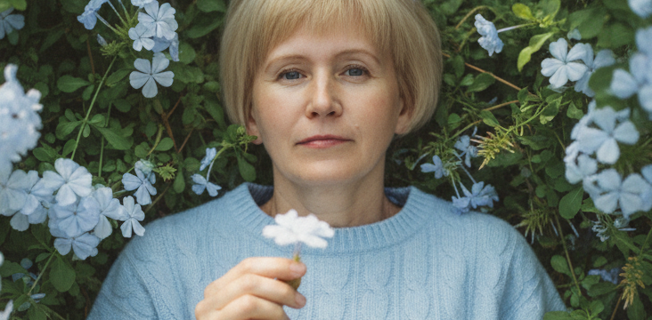

Подросток грубит, забросил учёбу и не идёт на контакт: три шага, которые можно сделать уже сегодня
Без криков, наказаний и бесполезных разговоров «по душам». Если вы чувствуете, что теряете контроль — прочитайте до конца, чтобы узнать, что делать прямо сейчас.
ФОТО'">
Наталья Ульянова
Психолог · 30 лет практики · Детский, семейный, медицинский
11 мин. чтения
Портрет Натальи Ульяновой · широкое фото
'">
Наталья Ульянова — семейный и детский психолог. 30 лет работает с семьями, где подростки перестали слушаться.
Если вы читаете этот текст — вы, скорее всего, уже перепробовали многое. Разговоры за ужином превращаются в монологи: вы говорите, он молчит или уходит в наушники. Замечания про учёбу заканчиваются хлопаньем двери. Попытки ограничить телефон — скандалом, после которого вы чувствуете себя плохим родителем.
Один психолог советует «дать свободу», другой — «усилить контроль». Подруги говорят «это возраст, пройдёт», но внутри у вас всё сжимается от страха: а вдруг не пройдёт?
Типичный цикл, в котором застревают родители
😤
Подросток грубит
или игнорирует
→
📢
Нотация / крик / наказание
телефон забрали, лекция прочитана
→
🚪
Он закрывается ещё сильнее
хлопает дверью, молчит неделю
→
😔
Родитель чувствует вину
отступает или ужесточает — и всё по кругу
Меня зовут Наталья Ульянова. Я семейный и детский психолог, и 30 лет я работаю с семьями, где подростки перестали слушаться. За это время я увидела одну закономерность: большинство родителей используют стратегии, которые гарантированно ведут в тупик. Не потому что они плохие родители — а потому что их никто никогда не научил работать с подростками иначе.
Ниже я покажу три конкретных шага, которые можно сделать уже сегодня.
Три шага к контакту
1
Шаг первый · неделя наблюдения
Остановите то, что не работает
Звучит слишком просто, но это самый трудный шаг. Родители подростков обычно делятся на два типа: те, кто ужесточает контроль, и те, кто опускает руки. Ни то, ни другое не ведёт к контакту.
Поэтому первое — на неделю перестать делать то, что гарантированно отдаляет ребёнка:
✕ Не работает никогда
✕Нотации про будущее: «пойдёшь в дворники»
✕Наказания не связанные с поступком
✕Давление через чувство вины
✕Жёсткий контроль каждого шага
✓ Что делать вместо этого
✓Объявить внутренний «мораторий» на нотации
✓Наблюдать: когда он открывается, когда — нет
✓Замечать повторяющиеся сценарии конфликтов
✓Просто быть рядом — без повестки
Задача этой недели — просто заметить, в какие моменты он идёт на контакт, а в какие закрывается. Обычно родители удивляются, обнаруживая, что большая часть конфликтов возникает из-за одних и тех же сценариев. Без этого наблюдения вы будете топтаться на месте.
→ Вы увидите паттерн. Это уже отличный результат.
2
Шаг второй · один разговор
Один разговор по-новому
После недели наблюдения попробуйте поговорить, но не так, как раньше. Забудьте фразы «ты должен», «ты меня не уважаешь». Вот схема разговора, которая работает, если вы готовы его действительно услышать.
Старая фраза
«Ты перестал делать уроки, ты совсем обленился»
→
Новая фраза
«Я заметила, что оценки снизились, и я волнуюсь. Не потому что оценки важны сами по себе — я не понимаю, что происходит, и могу ли я помочь»
В первом случае он защищается. Во втором — может хотя бы задуматься.
Ещё два правила разговора: признайте его взросление («я понимаю, что ты уже не маленький, и я не хочу контролировать каждый шаг»). И замолчите после того, как сказали. Самое трудное для родителя — не договаривать и не комментировать. Даже если он скажет «отстань» — это тоже информация.
Этот разговор не решит всё. Но он ломает привычный сценарий и оставляет маленькую возможность для контакта.
→ Привычный защитный механизм сбит.
3
Шаг третий · одно правило
Одно маленькое правило — для себя
Родители часто хотят, чтобы подросток менялся, но сами продолжают делать то же самое. А подростки очень чувствительны к несправедливости: если вы требуете уважения, но можете накричать — он не будет уважать.
Поэтому третий шаг — ввести одно простое правило для себя. Выберите одно, которое вам реально по силам соблюдать неделю:
✓ Примеры правил
→«Я не кричу в ответ»
→«Я стучу в дверь, прежде чем зайти»
→«Я не проверяю телефон без спроса»
💡 Почему это работает
Подростки не верят обещаниям «я буду тебя уважать». Они верят конкретным действиям.
Три дня без стука в дверь — это аргумент. Сдержались один раз — это аргумент.
Только после того, как вы покажете последовательность в мелочах, можно говорить о более серьёзных договорённостях.
→ Он видит: «они изменились». Появляется основание доверять.

Наталья за работой · онлайн-сессия
'">
Что дадут эти три шага
Если вы сделаете всё описанное выше, вы заметите изменения. Скорее всего, не кардинальные. Он не станет отличником и не начнёт обнимать вас каждый вечер. Но кое-что сдвинется.
Он может чуть меньше хлопать дверью. Или однажды сам рассказать что-то про школу. Или хотя бы перестать уходить в полное игнорирование. Эти маленькие сдвиги — сигнал, что направление выбрано верно.
Но давайте честно. Трёх шагов недостаточно для системных изменений. Потому что настоящая проблема не в том, что вы не умеете разговаривать или забываете стучать в дверь. Настоящая проблема в том, что вы действуете в одиночку — и каждый срыв отбрасывает вас назад.
Почему без помощи эти шаги почти никогда не доводят до результата
Три типичных сценария, которые происходят без поддержки
1
Вы держитесь три дня. На четвёртый он приходит с двойкой и грубит. Вы срываетесь, кричите, забираете телефон. Потом чувствуете вину и отступаете. И теперь уже не только он не доверяет вам — но и вы себе.
2
Вы проводите разговор по схеме. Он молчит или уходит в комнату. Вы не знаете, что делать дальше. Ждать? Идти за ним? У вас нет обратной связи — никто не скажет «ты всё сделала правильно, просто подожди» или «нет, здесь надо было иначе».
3
Вы вводите правило: не кричать. А он, чувствуя вашу слабину, начинает грубить сильнее — проверяет, сдержитесь вы или нет. Вы срываетесь на третий раз. И он делает вывод: «а, ну вот, всё как раньше».
Для того чтобы три шага превратились в устойчивый результат, нужен тот, кто будет рядом в процессе:
🤝
Держать вас за руку в моменты, когда хочется сорваться, и возвращать к плану
🔍
Подсказывать, что делать, когда стандартные схемы не работают — а с подростками они часто не работают, потому что каждый уникален
👁
Видеть вашу семейную систему со стороны — те слепые зоны, которые вы сами не замечаете, потому что вы внутри
🎯
Нести ответственность за процесс, чтобы вы не бросили на полпути
То есть нужен специалист, который проведёт вас через этот кризис не за год терапии — а за несколько встреч.
Хотите помочь себе прямо сейчас?
«Инструкция к подростку: как пережить пубертат и не сойти с ума»
Если вы пока не готовы к личной работе с психологом, но хотите помочь себе и ребёнку самостоятельно — я написала прикладной гайд самопомощи.
26
страниц чистой практики — без воды и занудных лекций
1
вечер на прочтение, чтобы полностью изменить атмосферу в доме
Что внутри
→Что на самом деле происходит с ребёнком в пубертате
→Как успокоить собственную панику — пошагово
→Правила поведения во время подростковой истерики
→Открываете в критический момент — читаете нужную страницу — применяете сразу
Я не веду долгую терапию с подростками — для этого есть другие форматы. Моя задача — за 3–4 встречи с родителями дать инструменты, которые работают быстро и измеримо.
Я не заменяю школьного психолога и не лечу глубокие травмы. Я помогаю наладить контакт там, где он разрушен, и создать правила, которые работают, даже когда ребёнок бунтует.
ФОТО'">
Наталья Ульянова психолог
Наталья Ульянова
Семейный и детский психолог — 30 лет практики
Медицинский психолог — работаю на стыке психики и физиологии
Медиатор — провожу переговоры между теми, кто уже не может говорить
Супервизор — учу других психологов работать с трудными подростковыми кейсами
Только онлайн — работаю с родителями по всей России и за рубежом
Начните с одного шага
Консультация с психологом
₽ 3 500
1 час · без обязательств продолжать
60-минутная онлайн-встреча
Честный ответ: кризис или клинический случай
2–3 рекомендации, применимые уже сейчас
Вам станет гораздо спокойнее после этой сессии
Бонус № 1
Шаблон семейного договора
Готовые пункты под редактирование: уроки, телефон, карманные деньги и последствия нарушений.
Бонус № 2
Подробный гайд «Что делать в экстренных ситуациях»
Пошаговые инструкции на конкретные случаи
Формат — только онлайн. Подросток подключается, только если сам хочет и если это нужно. Полная конфиденциальность. Мест в этом месяце немного.
Или просто позвоните мне по номеру +7 960 296 3555
Что будет, если ничего не менять
Подросток либо привыкнет к роли «врага семьи» и уйдёт в полную изоляцию, либо найдёт других взрослых (не факт, что адекватных), либо к 18 годам просто выпорхнет с мыслью «наконец-то от этих стариков». И вы останетесь с чувством, что упустили что-то важное.
Можно отдать его психологу и считать, что проблема решена. Но пока не изменится семейная система, пока вы не перестанете реагировать на его провокации по-старому — ничего глобально не сдвинется. Психолог работает с ребёнком час в неделю, а вы живёте с ним 24/7.
Важно
Мест в этом месяце немного — я беру ограниченное количество семей, потому что каждая встреча требует подготовки и погружения.
«Таблетки нет. Есть системная работа и специалист, который эту работу направляет.» — Наталья Ульянова
Подросток не идёт на контакт?
Диагностика с психологом — 3 500 ₽